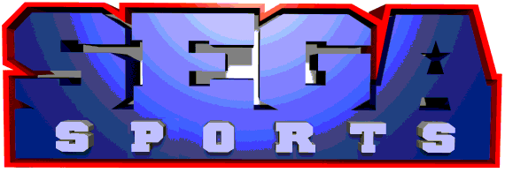
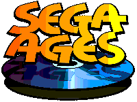
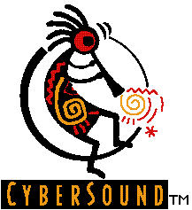
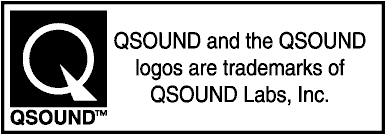
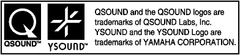
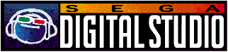

★セガサターンソフトウェア作成基準
★セガサターンソフトウェア作成基準
▲
戻る｜
進む▼
セガサターンソフトウェア作成基準/セガブランド版/Ver3.00
別添２
「ライブラリ及び特許使用時のライセンス表示について」
あらかじめ他社の手によって用意されたライブラリを使用する場合、及び他社所有の特許を使用する場合は、ライセンス契約に基づき、その会社の社名ロゴ・許諾表示等を決められた場所に表示しなければならない。
１．動画再生ライブラリ“TrueMotion”(The Duck Corporation)
- このライブラリを使用する場合は、以下の場所に 図 別添2-1のロゴを表示すること。
タイトルループ（ムービー中もしくはそれ以外の場所）に２秒以上単独表示 ＜義務＞
パッケージ（バックインレイ）に１箇所 ＜義務＞
取扱説明書（裏面もしくは最終ページ）に１箇所 ＜義務＞
図 別添2-1 TrueMotionロゴ
- ※スタートボタンで次画面へのスキップが可能。
- ※モノクロ反転も可。
２．セガスポーツロゴ
- スポーツタイトル及びレースタイトルでは、以下の場所に図 別添2-2のロゴを表示すること。
タイトルループ内セガロゴの直後 ＜義務＞
取扱説明書の表面（マルチケースの場合はフロントインレイ）に１箇所 ＜義務＞
図別添2-2 セガスポーツロゴ

- ※表示方法に関しては（３．セガロゴ）を参照のこと。
３．セガエイジスロゴ
- セガエイジスタイトルでは、以下の場所に図 別添2-3のロゴを表示すること。
タイトルループ内セガロゴの直後 ＜義務＞
取扱説明書の表面（マルチケースの場合はフロントインレイ）に１箇所 ＜義務＞
図別添2-3セガエイジスロゴ

- ※表示方法に関しては（３．セガロゴ）を参照のこと。
４．セガサターン用音色ライブラリ“Cyber Sound”（InVision Interactive）
- このライブラリを使用する場合は、以下の場所に 図 別添-2-4のロゴを表示すること。
パッケージ（バックインレイ）に１箇所 ＜義務＞
エンディング（スタッフロール）画面に１箇所 ＜義務＞
その他タイトルループやサウンドテストで表示するのが望ましい ＜推奨＞
図別添2-4 Cyber Soundロゴ

- ※最低限ロゴに使われている全ての文字が判別できる程度の大きさで表示すること。
５．動画再生ライブラリ“Cinepak”（Radius）
- このライブラリを使用する場合は、以下の文章をパッケージ（バックインレイ）に表記すること。
- 「Cinepak for SEGA Cinepak is a registered trademark of Radius.」
６．3Dサウンドライブラリ“Q-Sound”（Qsound Labs, Inc.）
- このライブラリを使用する場合は、以下の場所に図 別添2-6のロゴ及び文章を表示すること。
パッケージ（バックインレイ）に１箇所 ＜義務＞
取扱説明書（裏面）に１箇所 ＜義務＞
ＣＤレーベルに１箇所 ＜義務＞
図別添2-6 QSoundロゴ

７．3Dサウンドライブラリ“Y-Sound”（YAMAHA Corporation）
- このライブラリを使用する場合は、以下の場所に図 別添2-7のロゴ及び文章を表示すること。
パッケージ（バックインレイ）に１箇所 ＜義務＞
取扱説明書（裏面）に１箇所 ＜義務＞
ＣＤレーベルに１箇所 ＜義務＞
図別添2-7 Ysoundロゴ

８．パーソナルライフゲームシステム特許（株式会社ハドソン）
- この特許を使用する場合は、以下の場所に図 別添2-8のロゴを表示すること。
パッケージに１箇所 ＜義務＞
取扱説明書に１箇所 ＜義務＞
図別添2-8 PLGSロゴ
９．ゴースト特許（ATARI GAMES CORPORATION）
- この特許を使用する場合は、以下の文章をパッケージに載せること。
- 「U.S. Patent Nos. 5,269,687 and 5,354,202」
10．FONTWORKS社製フォント（FONTWORKS International Limited）
- FONTWORKS社製のフォントを使用する場合は、以下の文章を取扱説明書（場所は任意）に載せること。
- 国内版：
「ゲーム中のフォントは、FONTWORKS International Limitedのものを使用しています。
FONTWORKSのフォントの名称、社名、及びロゴは、FONTWORKS International Limited
の商標または登録商標です。」
- 海外版：
「Fonts, using in this game are supported by FONTWORKS International Limited.
FONTWORKS product-names and FONTWORKS logos are registered trademarks or
trademarks of FONTWORKS International Limited. Copyright 1994 FONTWORKS
International Limited. All right reserved.」
11．セガデジタルスタジオロゴ
- セガデジタルスタジオを使用した場合は、以下の場所に図 別添2-11のロゴを表示すること。
エンディング（スタッフロール）画面に１箇所 ＜義務＞
図別添2-11 セガデジタルスタジオロゴ

12．JASRAC（日本音楽著作権協会）
- JASRACに登録された曲を使用する場合は、以下の場所にJASRAC発行の許諾番号を表記すること。
パッケージ（バックインレイ）に１箇所 ＜義務＞
▲
戻る｜
進む▼
★セガサターンソフトウェア作成基準
Copyright SEGA ENTERPRISES, LTD., 1997